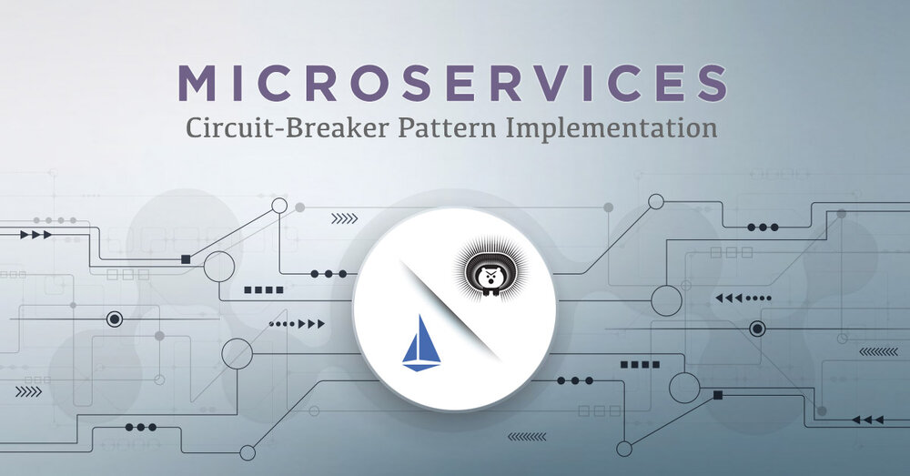
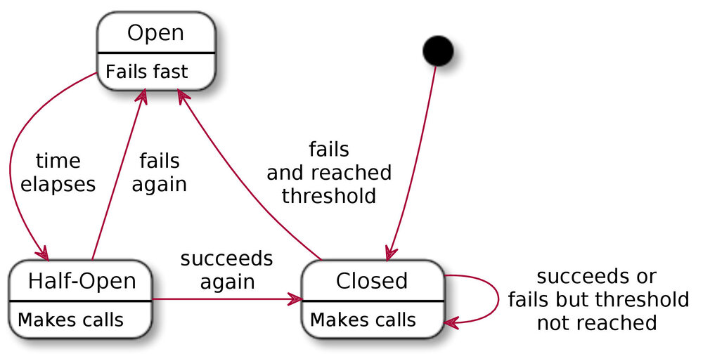
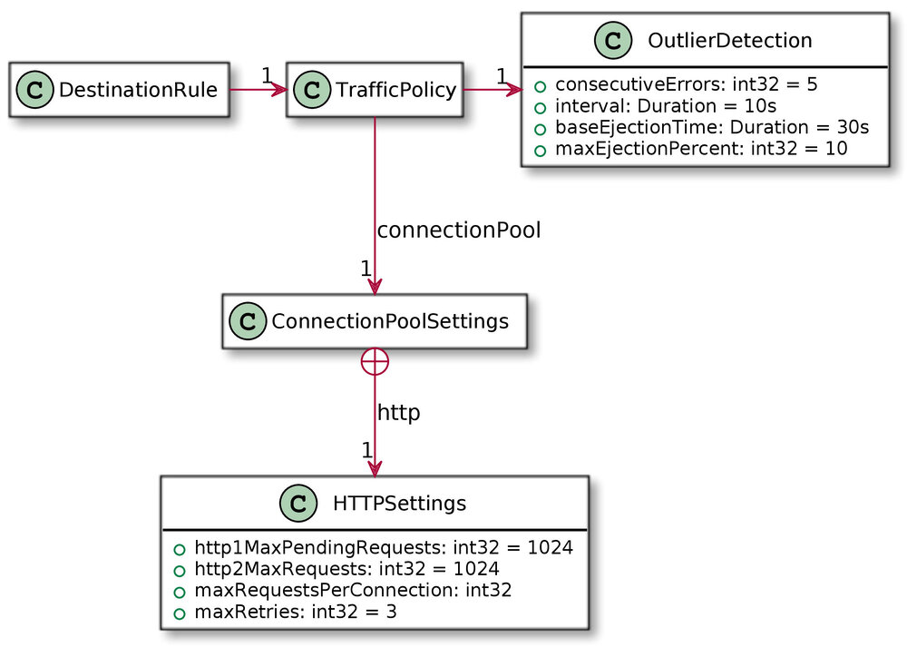
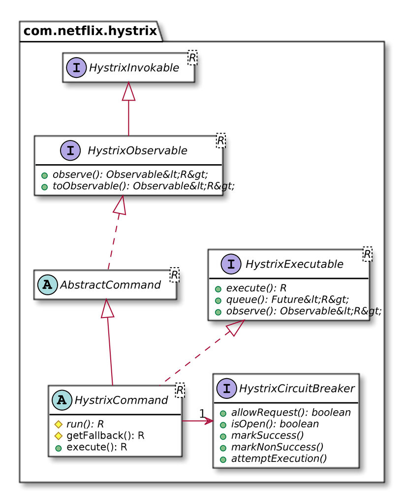

本文为翻译文章，点击查看原文。
编者按
本文作者由浅及深，从核心问题的引入到具体模式的代码实现，阐述了微服务两种断路器模式的实现原理、优缺点以及二者的比较。
前言
不可否认的是，在过去的几年里，Docker和Kubernetes等技术已经彻底改变了我们对软件开发和部署的理解。
但是，尽管软件开发行业的快速发展促使开发人员采用最新的技术，但是后退一步，更好地查看支持这些技术的已建立的模式是很重要的。
断路器模式是微服务体系结构中广泛采用的模式之一。我们将比较使用两种不同方法实现它的优缺点: Hystrix和Istio。

微服务同步通信的核心问题
设想一个非常简单的微服务体系结构，包括:
- 一个后端服务
- 一个前端服务
我们假设后端和前端通过同步HTTP调用进行通信。
客户端C1 和 C2 调用 前端 获取一些信息。由于前端没有客户端所需的所有数据，因此它调用后端以获得缺失的部分数据。
但是因为网络通信，很多事情会发生:
- 前端和后端之间的网络故障
- 后端可能会因为错误而宕机
- 一个被后端依赖的服务(*e.g.*数据库)可能宕机
根据墨菲定律(“任何可能出错的都会出错”)，前端和后端之间的通信迟早会失败。
如果我们研究从前端到后端单个调用的生命周期，并考虑后端由于某种原因宕机，那么在某个时候，前端将因超时取消调用。
将范围缩小到应用程序级别，多个客户机同时调用前端，这将转换为对后端的多个调用: 前端将很快被请求淹没，并淹没在超时中。
在这个场景中，唯一合理的解决方案是fail-fast: 前端应该意识到后端出现了问题，并立即将故障返回给自己的客户端。
断路器模式
在电路领域中，断路器是为保护电路而设计的一种自动操作的电气开关。它的基本功能是在检测到故障后中断电流。然后可以重置(手动或自动)，以在故障解决后恢复正常操作。
这看起来与我们的问题非常相似: 为了保护应用程序不受过多请求的影响，最好在后端检测到重复出现的错误时立即中断前端和后端之间的通信。
在他的Release It一书中， Michael Nygard 使用了这个类比，并为应用于上述超时问题的设计模式提供了一个案例。它背后的流程非常简单:
- 如果调用失败，将失败调用的数量增加1
- 如果调用失败次数超过某个阈值，则打开电路
- 如果电路打开，立即返回错误或默认响应
- 如果电路是打开的，过了一段时间，半打开电路
- 如果电路是半开的，下一个呼叫失败，再打开它
- 如果电路是半开的，下一个呼叫成功，关闭它
这可以用下图来总结:

Istio断路器
Istio是一个服务网格(Service Mesh)，微服务应用程序的可配置基础结构层。它使服务实例之间的通信灵活、可靠和快速，并提供服务发现、负载平衡、加密、身份验证和授权、对断路器模式的支持等功能。
Istio的控制平面在底层集群管理平台(如Kubernetes、Mesos等)上提供了一个抽象层，并要求以这种方式管理应用程序。
作为其核心，Istio由位于应用程序实例前面的Envoy代理实例组成，并且使用了sidecar容器模式和Pilot(一个管理它们的工具)。这种代理策略有很多优点:
- 自动为HTTP, gRPC, WebSocket和TCP流量做负载平衡。
- 通过丰富的路由规则、重试、失败和错误注入对流量行为进行细粒度控制。
- 可插入的策略层和配置API，支持访问控制、速率限制和配额。
- 一个集群内所有流量的自动度量、日志和跟踪，包括集群的加入和退出。
- 在具有强大的身份验证和授权的集群中进行安全的服务间通信。
因为对后端的出站调用通过Envoy代理，所以很容易检测到它们何时超时。然后代理可以拦截进一步的调用并立即返回，从而有效地执行fail-fast。特别地，这使得断路器模式能够以黑箱方式运行。
配置Istio断路器
正如我们所说，Istio构建在您选择的集群管理平台上，并要求应用程序在这个平台部署。Kubernetes通过DestinationRule实现断路器模式，或者更具体的路径TrafficPolicy(原断路器)->OutlierDetection，根据以下模型:

参数如下:
| 域 | 描述 |
|---|---|
consecutiveErrors |
断路器打开前的出错次数。 |
interval |
断路器检查分析的时间间隔。 |
baseEjectionTime |
最小的开放时间。该电路将保持一段时间，等于最小弹射持续时间和电路已打开的次数的乘积。 |
maxEjectionPercent |
可以弹出的上游服务的负载平衡池中主机的最大百分比。 |
与上述公称断路器相比，有两个主要偏差:
- 没有半开放的状态。然而，断路器持续打开的时间取决于被调用服务之前失败的次数。持续的故障服务将导致断路器的开路时间越来越长。
- 在基本模式中，只有一个被调用的应用程序(后端)。在更实际的生产环境中，负载均衡器后面可能部署同一个应用程序的多个实例。某些情况下有些实例可能会失败，而有些实例可能会工作。因为Istio也有负载均衡器的功能，能够追踪失败的实例，并把它们从负载均衡池中移除，在一定程度上: ‘maxEjectionPercent’属性的作用是保持一小部分的实例池。
Istio实现断路器的方法是一种黑盒方法。它的视角很高，只有出了问题才能打开电路。另一方面，它的设置非常简单，不需要任何底层代码的知识，并且可以作为事后配置。
Hystrix断路器
Hystrix是一个最初由Netflix提供的开源Java库。它是一个延迟容忍和容错的库，用于隔离对远程系统、服务和第三方库的访问点，停止级联故障，并在不可避免出现故障的复杂分布式系统中启用弹性。
Hystrix有很多特点，包括:
- 保护通过第三方客户端库访问(通常是通过网络)的依赖项的延迟和失败。
- 防止复杂分布式系统中的级联故障。
- 失败快，恢复快。
- 回退并尽可能优雅地降级。
- 启用近实时监视、警报和操作控制。
当然，断路器的模式体现了这些特点。因为Hystrix是一个库，它以白盒方式实现它。
Resilience4J Netflix最近宣布，它已经停止开发Hystrix库，转而开发目前知名度较低的 Resilience4J 项目。 即使客户端代码可能稍有不同，Hystrix和Resilience4J的实现方法也是相似的。
一个Hystrix断路器的例子
以电子商务web应用程序为例。该应用的架构由不同的微服务组成，每个微服务都基于一个业务特性:
- 身份验证
- 目录浏览
- 购物车管理
- 定价和引用
- 其它
当显示目录项时，将查询定价/报价微服务的价格。如果它坏了，不管是不是断路器，价格都不会退回来，也不可能订购任何东西。
从企业的角度来看，任何停机时间不仅会影响品牌的认知度，还会降低销售。大多数销售策略都倾向于销售，尽管价格并不完全正确。实现此销售策略的解决方案可以是缓存定价/报价服务在可用时返回的价格，并在服务关闭时返回缓存的价格。
Hystrix提供了一个断路器实现，允许在电路打开时执行fallback机制，从而实现了这种方法。
这是Hystrix模型的一个非常简单的类图:

最关键的地方就在 HystrixCommand方法 run()和 getFallback():
run()是要实际执行的代码 e.g. 从报价服务中获取价格getFallabck()获取当断路器打开时的fallback结果 e.g. 返回缓存的价格
这可以转化为以下代码，使用Spring的RestTemplate:
public class FetchQuoteCommand extends HystrixCommand<Double> {
private final UUID productId; // 1
private final RestTemplate template; // 2
private final Cache<UUID, Double> cache; // 3
public FetchQuoteCommand(UUID productId,
RestTemplate template,
Cache<UUID, Double> cache) {
super(HystrixCommandGroupKey.Factory.asKey("GetQuote")); // 4
this.template = template;
this.cache = cache;
this.productId = productId;
}
@Override
protected Double run() {
Double quote = template.getForObject("https://acme.com/api/quote/{id}", // 5
Double.class,
productId);
cache.put(productId, quote); // 6
return quote;
}
@Override
protected Double getFallback() {
return cache.get(productId); // 7
}
}
这需要作出一些解释:
- 该命令包装产品的id，将其建模为
UUID。 - Spring的
RestTemplate用于进行REST调用。任何其他实现方式都可以。 - 一个共享的JCache实例，用于在服务可用时存储引号。
- Hystrix命令需要一个组键，以便在需要时将它们组合在一起。这是Hystrix的另一个特性，超出了本文的范围。有兴趣的读者可以在Hystrix wiki中阅读有关命令组的内容。
- 执行对引用服务的调用。如果它失败，Hystrix断路器流程启动。
- 如果调用成功，则将返回的引用缓存到JCache共享实例中。
- 当断路器打开时调用getFallback()。在这种情况下，从缓存中获取引用。
Hystrix wiki提供了更高级的例子，例如fallback本身就是一个需要执行的命令。
将Hystrix与Spring Cloud集成
虽然上面的代码可以工作，但是每次引用时都需要创建一个Hystrix命令对象。
Spring Cloud是建立在Spring Boot(本身依赖Spring框架)之上的库，它提供了与Spring的良好集成。它让你在处理Hystrix命令对象的实例化时，只需注释所需的fallback方法:
public class FetchQuoteService {
private final RestTemplate template;
private final Cache<UUID, Double> cache;
public SpringCloudFetchQuoteCommand(RestTemplate template,
Cache<UUID, Double> cache) {
this.template = template;
this.cache = cache;
}
@HystrixCommand(fallbackMethod = "getQuoteFromCache") // 1
public Double getQuoteFor(UUID productId) { // 2
Double quote = template.getForObject("https://acme.com/api/quote/{id}", // 3
Double.class,
productId);
cache.put(productId, quote); // 4
return quote;
}
public Double getQuoteFromCache(UUID productId) { // 5
return cache.get(productId);
}
}
- 这个方法应该用
@HystrixCommand注释.fallbackMethod元素引用fallback方法. 显然，这将通过反射来处理，并且不是类型安全的——毕竟这是一个字符串。 - Spring Cloud Hystrix允许在方法调用时传递产品的id参数。与上面简单的Hystrix命令相比，这允许有一个通用的服务对象。Hystrix命令的创建由Spring Cloud在运行时处理。
- 核心逻辑没有改变。
- 同样，缓存过程保持不变。
- fallback方法是一种常规方法。 它将使用与主方法完全相同的参数值来调用， 因此，它必须具有相同的参数类型(以相同的顺序)。因为
getQuoteFor()方法接受UUID，所以这个方法也接受UUID。
无论是独立的还是由Spring Boot Cloud封装的，Hystrix都需要在代码级处理断路器。因此，需要提前计划，更改需要部署更新后的二进制文件。然而，当事情出错时，这允许有一个非常好的自定制的行为。
Istio vs Hystrix: battle of circuit breakers
如果存在失败的可能性，给定时间，就会出现失败，严重依赖网络的微服务需要针对失败进行设计。断路器模式是处理服务缺乏可用性的一种方法: 它不会对请求进行排队并阻塞调用者，而是快速失败(fail-fast)并立即返回。
实现断路器的方法有两种，一种是黑盒方式，另一种是白盒方式。Istio作为一种代理管理工具，使用了黑盒方式.它实现起来很简单，不依赖于底层技术栈，而且可以在事后配置。
另一方面，Hystrix库使用白盒方式。它允许所有不同类型的fallback:
- 单个默认值
- 一个缓存
- 调用其他服务
它还提供了级联回退(cascading fallbacks)。这些额外的特性是有代价的: 它需要在开发阶段就做出fallback的决策。
这两种方法之间的最佳匹配可能会依靠自己的上下文: 在某些情况下，如引用的服务，一个白盒战略后备可能是一个更好的选择，而对于其他情况下快速失败可能是完全可以接受的，如一个集中的远程登录服务。
当然，没有什么能阻止你同时使用它们。